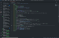

テキストエディタって？
今回は、「テキストエディタ」についてです！
テキストエディタとは、そのまんま、文書ファイルを作るアプリケーションのことです！例としては、
- VScode
- terapad
- メモ帳(Windows)
などといったものがあります！
その中でも、私はVScodeをお勧めします！マジで！
まず、このVScode、コード予測などに優れていて、アプリ開発にも一役買っています！
拡張機能を導入することによって、そのプログラムの実行結果なども見ることができます！
さらに、VScodeは拡張機能も充実しており、拡張機能を入れることで日本語にも対応します！
ここからインストール！
オススメ拡張機能
そもそも拡張機能とは、拡張機能です((((おい
拡張機能を使うことで、英語を日本語にしたり、コードを書くのを楽にしたり…メリット大量です！
※ここからはVScodeをインストールしたことを前提として説明していきます
拡張機能は、下の四角形が集まったところからダウンロードできます！

ぼやけててｽﾐﾏｾﾝ！(__)
オススメ拡張機能
Japanese Language Pack for Visual Studio Code
定番のこれ。「Marketplace」のところで「Japanese」と検索すると一番上に出てきます！
※安心のマイクロソフト社が開発
これを使うことで、VScodeの説明が大体日本語になります！
indent-rainbow
これを使うことで、インデント（また説明します）が分かりやすくなります！
vscode-icons
これを使うと、HTMLやCSSはもちろん、Pythonやjson、Rubyなどに専用アイコンがつきます！
すぐにどのファイルなのかを把握できるので、オススメです！
さあ！貴方もVScodeをインストールして、Webページ作成を始めましょう！（以上、宣伝でした。）
今回はこれで終わります！次回は「Webページを仮作成してみよう！」です！
(ﾟ∀ﾟ)ﾏﾀﾈ
ホームに戻る
目次へ戻る